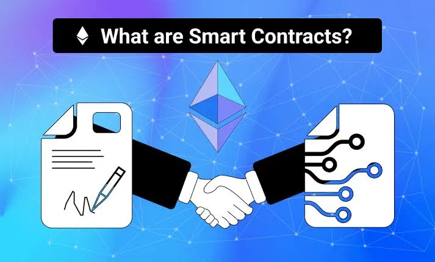
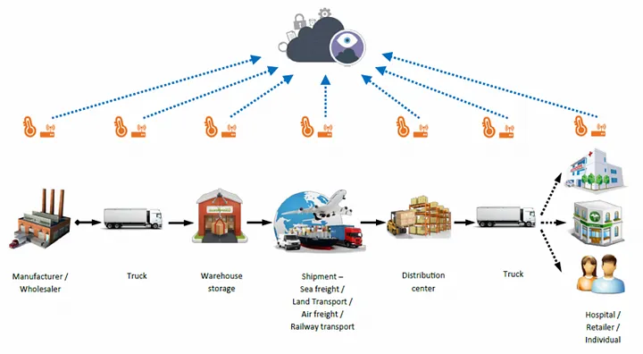
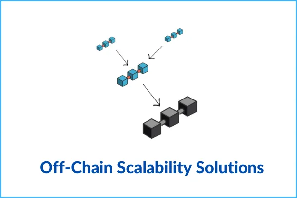
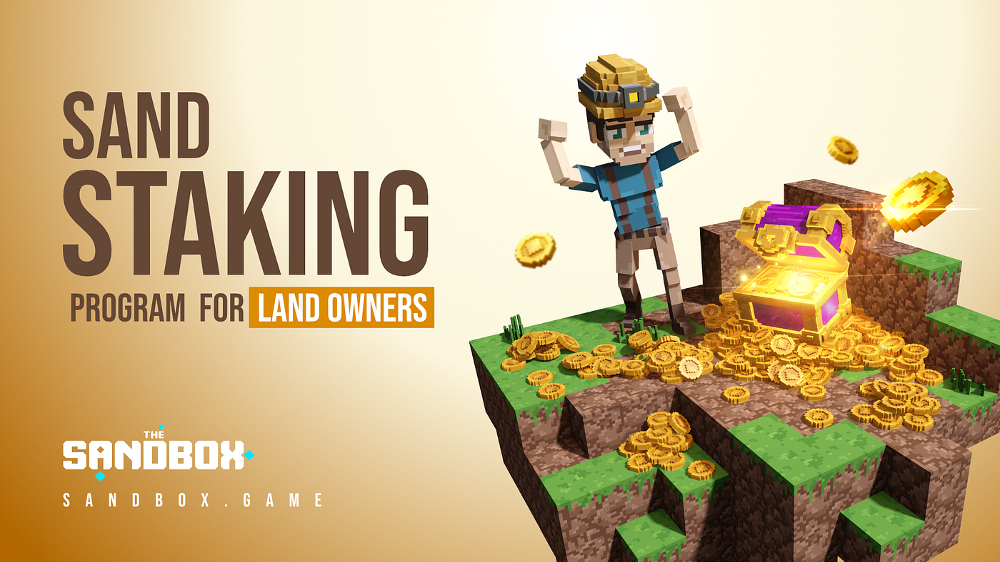
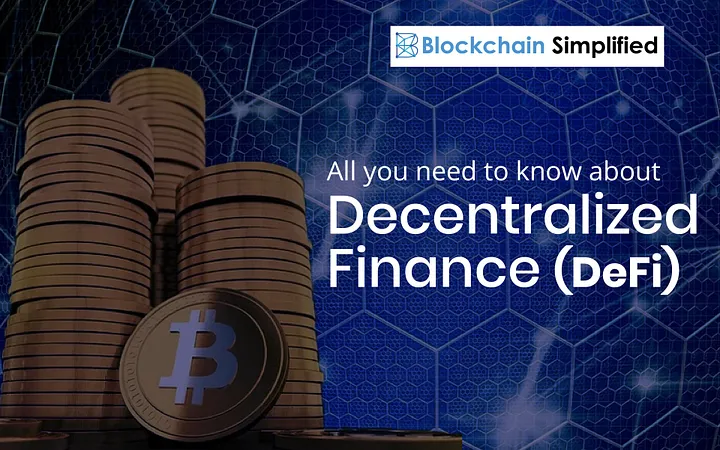
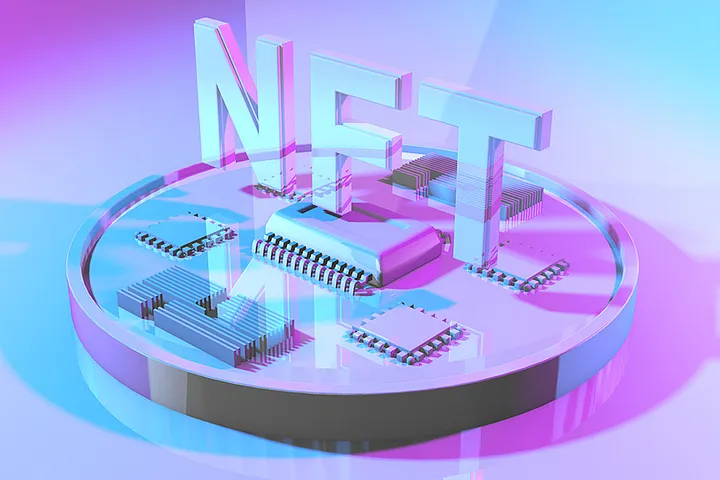

While cryptocurrency and blockchain are common terms in today’s world, Metaverse is yet another concept gaining considerable popularity. It is simply a system of 3D virtual worlds aimed at building and facilitating social connections...

A smart contract is yet another technological development that mimics part of our real-time action. As its name implies, smart contract essentially deals with contract confirmation on a decentralized network.
When we talked about the Metaverse, we mentioned that “Metaverse is an imaginary mimic of the internet as a universal, comprehensive, yet single digital world...
A market is said to be bearish when the value of the asset depreciates, and the investor loses a fraction or all of their investment. As simple as it seems, it has driven many away from cryptocurrency and scared others who are looking to start trading...
Cryptocurrency is any digital or virtual currency that is transacted over a verified decentralized system, securely backed with cryptography. Rather than fiat or traditional currencies controlled by a central authority, cryptocurrencies are traded, recorded, and maintained by groups...

Immutability and distribution as provided by the evolution of Blockchain technology have — over the years — been useful across all organizational operations. Beyond just eliminating the central authorities, it also helps in enabling a decentralized, open and secure network...

The public ledger serves as a digital record-keeping system which secures the identity of the users in an anonymous and secure system. It functions as a record book which stores and maintains the crypto balances and every transaction that goes on in the blockchain...
The recent crash of the Bitcoin bubble has left many in a state of confusion on whether to withdraw from the cryptocurrency market or not. Besides, upcoming traders and investors are also wondering if they should venture into cryptocurrency.
You know, there’s no point staking your hard-earned income on an investment scheme that doesn’t promise a return. Well, I doubt if there is such an investment arrangement anywhere that promises a 100 per cent return on investment...

In recent years, the gaming industry has been evolving with varieties of trends for fans and lovers of this entertainment approach. It is being utilized by millions of individuals globally and has garnered over $90 billion as one of the first places people get into as a tech trend.
Starting from the blocky sprites and primitive games we enjoyed in those days, video games have come a long way with the evolution of the internet. Recent technologies like Augmented Reality (AR), Virtual Reality (VR), Artificial intelligence (AI), etc. are now involved...
According to Forbes’ Steven Ehrlich, stock-to-flow is one of the most accurate price prediction models that have been in use.
But then, it is not without any limitations to itself. Plan B’s stock-to-flow model is simply a model which quantifies variables using the ratio between the current supply and the new supply...

Sandbox announced today that they have introduced a new staking medium for land owner. The decentralized gaming platform developed by players made this known today through their Twitter account. This new development in the gaming ecosystem will enahnce land owners exclusive rewards...
Interestingly, many people — at this stage — find themselves losing interest in the crypto market due to major downturn that happened recently. The fear of losing all their capital and available profits led them to sell out their tokens at a lower price. Having said that, the question arising is who are those buying these tokens even at the market lowest?...

A blockchain wallet is a digital wallet that allows users to store and manage their Bitcoin, Ether, and other cryptocurrencies.
For every wallet, there's a private key that you just keep secured. Losing it through theft or otherwise can lead to losing all the funds available on your wallet.
A digital wallet can either be a software, hardware, or paper wallet. Some common software digital wallets include MetaMask, Trust wallet, Coinbase, Rainbow, etc...

Decentralized finance (DeFi) is a new iteration of financial system following the evolution of Web3. As its name implies, it deals solely with the eradication of central authorities or government in financial institution...

ANon-fungible tokens or just NFTs are special and unique digital assets that can’t be reproduced or imitated. Besides, they cannot also be interchanged for other assets, either of the same kind or different kind.
Cryptocurrencies like Bitcoin, Ethereum, Dogecoin, etc. are not unique because they can be reproduced and interchanged, hence, they are fungible. Similarly, traditional or fiat currencies like the Japanese Yen, United States dollar, etc. can also be replicated, making them fungible...